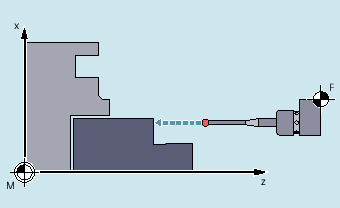
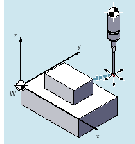
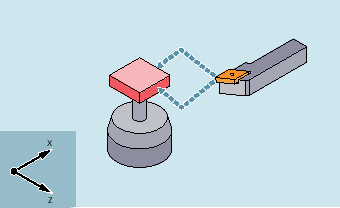
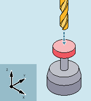

Ein Messzyklus ist ein vordefiniertes NC-Programm, in dem ein bestimmter Messvorgang, wie z. B. das Bestimmen des Innendurchmessers eines zylindrischen Werkstücks, allgemeingültig programmiert ist. Die Anpassung an die konkrete Messsituation erfolgt über Parameter, die dem Zyklus beim Aufruf übergeben werden.
Messzyklen stehen für Werkstück- und Werkzeugmessungen in den Technologien Drehen und Fräsen zur Verfügung.
Für die Werkstückmessung wird ein Messtaster wie ein Werkzeug an das eingespannte Werkstück herangefahren und die Messwerte werden erfasst. Durch den flexiblen Aufbau der Messzyklen lassen sich nahezu alle in einer Fräs- oder Drehmaschine zu lösenden Messaufgaben bewältigen.
|  |  | |
Beispiel: Werkstück messen an Drehmaschine | Beispiel: Werkstück messen an Fräsmaschine |
Das Ergebnis der Werkstückmessung kann wahlweise wie folgt verwendet werden:
Korrektur in Nullpunktverschiebung
Automatische Werkzeugkorrektur
Messung ohne Korrektur
Bei der Werkzeugmessung wird das eingewechselte Werkzeug an den Messtaster herangefahren und Messwerte werden erfasst. Der Messtaster ist entweder ortsfest angebaut oder wird durch eine mechanische Vorrichtung in den Arbeitsraum geschwenkt.
|  |  | |
Beispiel: Drehwerkzeug messen | Beispiel: Bohrer messen |
Die ermittelte Werkzeuggeometrie wird in den zugehörigen Werkzeugkorrekturdatensatz eingetragen.
Die hier vorliegende Dokumentation der Messzyklen bezieht sich ausschließlich auf die externe Programmierung und ist deshalb auf die Beschreibung von Syntax und Parameter beschränkt.
Für eine ausführliche Beschreibung der Messzyklen siehe Programmierhandbuch Messzyklen.
Die unter "Syntax" angegebene Programmzeile soll zeigen, wie der Zyklusaufruf zu programmieren ist.
Auf folgende Punkte ist besonders zu achten:
Korrekter Zyklusname
Aufrufreihenfolge der Übergabeparameter
In der Tabelle unter "Parameter" sind alle Zyklenparameter mit folgenden Daten beschrieben:
Bedeutung
Wertebereich
Abhängigkeiten zu anderen Parametern
Parameter mit der Kennzeichnung "reserviert" müssen mit Wert 0 oder Leerkomma programmiert werden, damit die Zuordnung der folgenden Aufrufparameter zu den internen Zyklusparametern stimmt. Ausnahme: bei Stringparametern Wert "" oder Leerkomma.